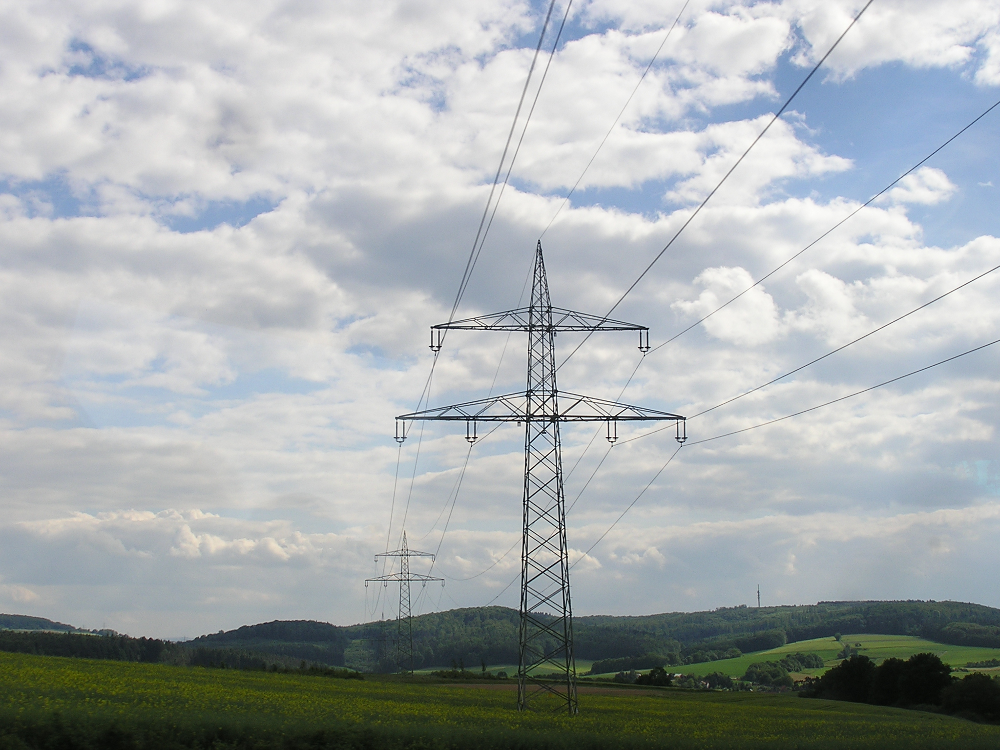
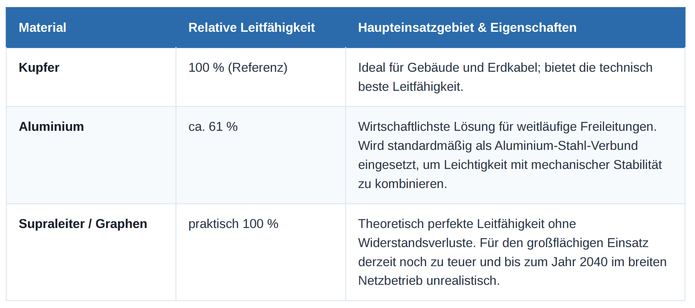

Effizienz, Digitalisierung und die Herausforderungen der Energiewende
Robin, Silas
Deutschland steht vor einer historischen Infrastrukturaufgabe: Dem Umbau des Stromnetzes. Da erneuerbare Energien (Wind im Norden, Solar im ganzen Land) meist fernab der großen Verbrauchszentren (Süden und Westen) entstehen, wird ein hochmodernes, flexibles

• Versorgungssicherheit auf Rekordniveau: Die durchschnittliche Strom-Ausfallzeit pro Verbraucher lag 2024 bei nur 11,7 Minuten (2023: 12,8 Min.) und damit deutlich unter dem 10-Jahres-Mittel von 12,7 Minuten.
• Netzverluste im Detail: Der aktuelle Nettoverlust liegt bei rund 5,7 % (2023: 27 TWh).
• Verteilernetz: Mit 17,2 TWh verursacht das Verteilernetz den Großteil der Verluste.
• Übertragungsnetz: Trotz hoher Effizienz steigen die absoluten Verluste langfristig an (2013: ca. 6 TWh), bedingt durch den zunehmenden Langstreckentransport von Strom.
• Effizienz der Spannungsebenen: Die 380-kV-Höchstspannung ist das verlustärmste System mit knapp über 1 % Verlust pro 100 km.
• Niedrigere Spannungsebenen (110 kV und Mittelspannung): Diese weisen deutlich höhere relative Verluste auf und werden daher hauptsächlich für die regionale Verteilung über kurze Strecken genutzt.
Das Kernproblem ist die räumliche Diskrepanz zwischen Stromerzeugung und Stromverbrauch.
• Der Norden produziert: Durch zahlreiche Onshore- und Offshore-Windparks wird dort ein großer Teil des Stroms erzeugt.
• Der Westen und Süden verbrauchen: Die größten Stromverbraucher sind die Industriezentren und Ballungsräume in diesen Regionen.
• Die Infrastruktur: Das bestehende Stromnetz umfasst rund 1,9 Millionen Kilometer Leitungen.
• Netzausbau bis 2045: Der Netzentwicklungsplan sieht den Bau von etwa 26.000 km neuen Höchstspannungsleitungen vor.
Die Materialwahl spielt eine entscheidende wirtschaftliche und technische Rolle für den Netzausbau:

• Netzverluste auf 3–4 % senken: Durch den Einsatz neuer HGÜ-Leitungen (Hochspannungs-Gleichstrom-Übertragung) auf den Nord-Süd-Korridoren, leistungsfähigerer Transformatoren und einer optimierten Laststeuerung.
• Vollständige Digitalisierung (Smart Grids): Flächendeckender Einsatz von Smart Metern, digitalen Ortsnetzstationen, Echtzeit-Monitoring und automatisierter Netzführung.
• Drastische Reduzierung von Redispatch-Kosten: Die Kosten für das Abregeln von Windparks und das Hochfahren von Ersatzkraftwerken sollen durch Netzausbau und Speichersysteme um mehr als die Hälfte gesenkt werden.
• Bessere Auslastung bestehender Leitungen (NOVA-Prinzip): Netzoptimierung vor Verstärkung vor Ausbau. Durch KI-gestützte Lastprognosen und wetterabhängigen Betrieb können 20–30 % mehr Strom transportiert werden.
• Virtuelle Kraftwerke aktivieren: Digitale Vernetzung von Millionen Elektroautos, Wärmepumpen und Heimspeichern, die flexibel und automatisch auf Netzsignale sowie Stromüberschüsse reagieren.
• Versorgungssicherheit trotz 80–90 % erneuerbarer Energien: Planung eines vollständig klimaneutralen Energiesystems bei gleichbleibender oder sogar höherer Netzstabilität.
Fazit: Das Netz der Zukunft auf einen Blick
Das Stromnetz 2040 wird nicht revolutionär neu erfunden, sondern hochdigitalisiert und weitgehend automatisiert. Angestrebt werden Netzverluste unter 4 %, eine um 20–30 % höhere Auslastung bestehender Trassen sowie die Integration von 30–50 GW an flexiblen Verbrauchern, um über 90 % erneuerbaren Strom sicher und effizient zu transportieren.